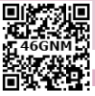
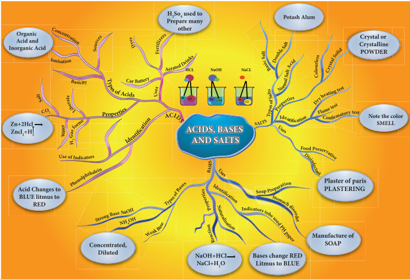

1. Z n plus 2 H C l give ZnCl2 plus dash gas
Bracket OPEN H2 O2 C O2 bracket closed
2. Apple contains malic acid. Orange contains dash
Bracket OPEN citric acid, ascorbic acid bracket closed.
3. Acids in plants and animals are organic acids. Where as Acids in rocks and minerals are dash
Bracket OPEN Inorganic acids, Weak acids bracket closed.
4. Acids turn blue litmus paper to dash
Bracket OPEN green, red, orange bracket closed.
5. Since metal carbonate and metal bicarbonate are basic, they react with acids to give salt and water with the liberation of dash
Bracket OPEN N O2, S O2, C O2 bracket closed.
6. The hydrated salt of copper sulphate has dash colour
Bracket OPEN red, white, blue bracket closed.
1. Classify the various types of Acids based on their sources.
2. Write any four uses of acids.
3. Give the significance of pH of soil in agriculture.
4. What are the various uses of Aquaregia.
5. What are the uses of Plaster of Paris question mark
6. Two acids ‘A’ and ‘B’ are given. Acid A gives one hydrogen ion per molecule of the acid in solution. Acid B gives two hydrogen ions per molecule of the acid in solution.
Bracket OPEN 1 bracket closed Find out acid A and acid B.
Bracket OPEN 2 bracket closed Which acid is called the King of Chemicals question mark
7. Define aquaregia.
8. Correct the mistakes:
A bracket closed Washing soda is used for making cakes and bread soft, spongy.
B bracket closed Calcium sulphate hemihydrate is used in textile industry for bleaching clothes.
9. What is neutralization reaction question mark Give an example.
1. Differentiate hydrate and anhydrous salts with examples.
2. Give the tests to identify Acids and Bases.
3. Write any four uses of bases.
4. Write any five uses of salts.
5. Sulphuric acid is called King of Chemicals. Why is it called so question mark
1. Chemistry-Lakhmir Singh and Manjit Kaur
2. Practical Chemistry-Doctor. N.K. Verma Steps
1. https:/www.thoughtco.com
2. Aquaregia Wikipedia
3. https:/scienceing.com is greater than Chemistry Concept

ICT CORNER Acids, Bases and Salts
Steps
Type the URL link given below in the browser or scan the QR code. You can view “Acids and bases”.
Click the ‘pH meter’ to explore the properties based on the pH value.
Click the ‘pH paper’ to explore the properties based on the colour of pH paper .
Also you can see the nature of the acids, bases using the conductivity.
Browse in the link:
URL: https://phet.colorado.edu/en/simulation/acid-base-solutions